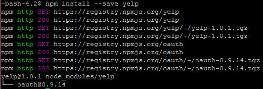

npm and the Yelp API
After installing Node.js and npm,
you'll need to download these modules to support Yelp API functionality:
- -bash-4.2$ npm install --save request
- The request module is used to make http
calls using get or post. You can also do this using forms on the browser, but it's
facilitated here.
- -bash-4.2$ npm install --save nonce
- The nonce module provides a timestamp, ever increasing and unique for each request made
- -bash-4.2$ npm install --save oauth-signature
- Provides authentication capabilities when accessing third-party servers. For OAuth 1.0a (which
we will be using with Yelp v2), the Consumer "secret" (password) is hashed with a Token "secret"
and a variety of submitted parameter values as described under the Request link. This process allows
the users to not share username and password credentials directly, maintaining them as secure.(5)
- -bash-4.2$ npm install --save yelp
- Allows you to save your secure Yelp information (Consumer Key, Consumer Secret, Token ID and
Token Secret) for use during queries.

Using the Modules
You're now ready to add the modules to your javascript code! Include a reference to each module at the
top of your .js file, or in your 'script' section, if embedding in an HTML file. You can also load the requests
into variables to access their attributes: